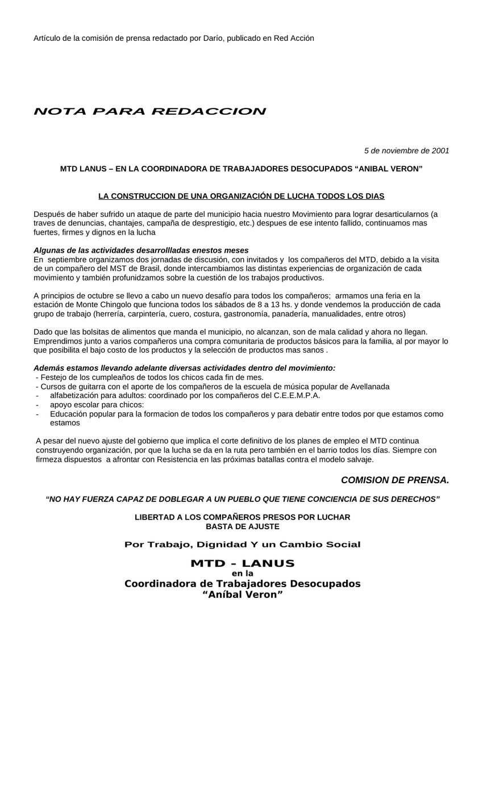

Primera hoja de la constircucón de una organización de lucha todos los días.doc. Clic en la imagen para abrir o descargar el archivo original.·22.5 KB·1 hoja

Artículo de la comisión de prensa redactado por Darío, publicado en Red Acción
5 de noviembre de 2001
Después de haber sufrido un ataque de parte del municipio hacia nuestro Movimiento para lograr desarticularnos (a traves de denuncias, chantajes, campaña de desprestigio, etc.) despues de ese intento fallido, continuamos mas fuertes, firmes y dignos en la lucha
Algunas de las actividades desarrollladas enestos meses
En septiembre organizamos dos jornadas de discusión, con invitados y los compañeros del MTD, debido a la visita de un compañero del MST de Brasil, donde intercambiamos las distintas experiencias de organización de cada movimiento y también profunidzamos sobre la cuestión de los trabajos productivos.
A principios de octubre se llevo a cabo un nuevo desafío para todos los compañeros; armamos una feria en la estación de Monte Chingolo que funciona todos los sábados de 8 a 13 hs. y donde vendemos la producción de cada grupo de trabajo (herrería, carpintería, cuero, costura, gastronomía, panadería, manualidades, entre otros)
Dado que las bolsitas de alimentos que manda el municipio, no alcanzan, son de mala calidad y ahora no llegan. Emprendimos junto a varios compañeros una compra comunitaria de productos básicos para la familia, al por mayor lo que posibilita el bajo costo de los productos y la selección de productos mas sanos .
Además estamos llevando adelante diversas actividades dentro del movimiento:
- Festejo de los cumpleaños de todos los chicos cada fin de mes.
- Cursos de guitarra con el aporte de los compañeros de la escuela de música popular de Avellanada
alfabetización para adultos: coordinado por los compañeros del C.E.E.M.P.A.
apoyo escolar para chicos:
Educación popular para la formacion de todos los compañeros y para debatir entre todos por que estamos como estamos
A pesar del nuevo ajuste del gobierno que implica el corte definitivo de los planes de empleo el MTD continua construyendo organización, por que la lucha se da en la ruta pero también en el barrio todos los días. Siempre con firmeza dispuestos a afrontar con Resistencia en las próximas batallas contra el modelo salvaje.
Por Trabajo, Dignidad Y un Cambio Social
en la
Coordinadora de Trabajadores Desocupados
“Aníbal Veron”
Transcripción del documento original la constircucón de una organización de lucha todos los días.doc. Se conserva la ortografía del original.